Unit 3: Photosynthesis and Respiration
BOT-DSM-511 Plant Physiology and Metabolism (Theory) BSc 5th Semester, UGC NEP Unit 3 — 12 hours
Coverage note — read this first. In the student's class notes, only photophosphorylation and the Calvin cycle were partly covered. Respiration — glycolysis, anaerobic respiration, the TCA cycle, oxidative phosphorylation, the glyoxylate cycle and the oxidative pentose phosphate pathway — was missing from the notes. This page therefore teaches Unit 3 from scratch: every syllabus sub-topic is covered here, whether or not it appeared in the notes. Do not rely on the notes alone for this unit.
1. Photosynthetic pigments
Photosynthesis begins with light capture, not with carbon fixation. A pigment absorbs a photon and is raised to an excited state; that excitation energy is then transferred from molecule to molecule until it reaches the reaction centre. No pigment works alone: pigments are organised in light-harvesting complexes (LHC) embedded in the thylakoid membrane, so that hundreds of pigment molecules funnel energy to one reaction centre.
Chlorophyll a and chlorophyll b
Chlorophyll a (Chl a) absorbs strongly in the blue-violet region (around 430 nm) and in the red region (around 660–680 nm), and reflects green — which is why leaves look green. Chlorophyll b absorbs at slightly shifted wavelengths (around 453 nm in the blue and 642 nm in the red). The structural difference is small — chlorophyll b has a formyl group (–CHO) where chlorophyll a has a methyl group (–CH3) on the porphyrin ring — but the absorption shift matters: together, a and b cover a wider range of wavelengths than either alone.
The decisive distinction is functional, not just spectral. Only chlorophyll a acts as the primary electron donor in the reaction centre. In Photosystem II the reaction-centre chlorophyll a is P680; in Photosystem I it is P700 (see Section 2). Chlorophyll b is never the reaction-centre pigment: it only harvests light and transfers excitation energy to chlorophyll a. An exam answer that calls chlorophyll b the primary donor is wrong — this is one of the traps in the Exam traps box below.
Carotenoids: carotene and xanthophylls
Carotenoids are yellow, orange and red pigments with a long conjugated chain of double bonds. They fall into two groups. Carotenes are pure hydrocarbons (for example, beta-carotene); xanthophylls are oxygenated carotenoids (for example, lutein, violaxanthin, zeaxanthin). Their roles are threefold:
- Accessory light harvesting: they absorb blue-green light (around 400–500 nm), wavelengths chlorophyll absorbs poorly, and transfer that energy to chlorophyll a.
- Photoprotection: they quench excess excitation energy and scavenge singlet oxygen and other reactive species, protecting chlorophyll from photo-oxidation in bright light. The xanthophyll cycle (violaxanthin to zeaxanthin) dissipates excess energy as heat.
- Structural role: they stabilise pigment–protein complexes in the thylakoid membrane.
In short: chlorophyll a does the chemistry; chlorophyll b and the carotenoids widen the harvest and protect the machinery. Without accessory pigments, photosynthesis would still work in red and blue light but would waste much of the visible spectrum and be far more vulnerable to light damage.
| Pigment | Absorption | Role |
|---|---|---|
| Chlorophyll a | Blue (~430 nm) and red (~660–680 nm) | Primary pigment; reaction-centre electron donor (P680, P700) |
| Chlorophyll b | Blue (~453 nm) and red (~642 nm) | Accessory pigment; transfers energy to Chl a; widens absorption |
| Carotene (e.g. beta-carotene) | Blue-green (~400–500 nm) | Accessory pigment; photoprotection |
| Xanthophylls (e.g. lutein, zeaxanthin) | Blue-green (~400–500 nm) | Accessory pigment; photoprotection; heat dissipation via xanthophyll cycle |
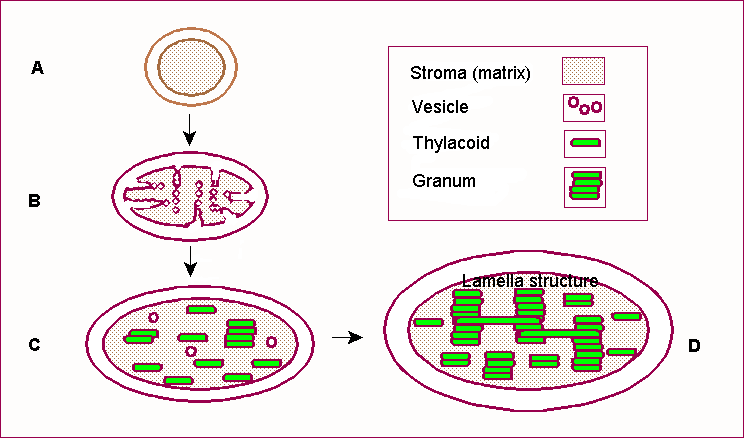
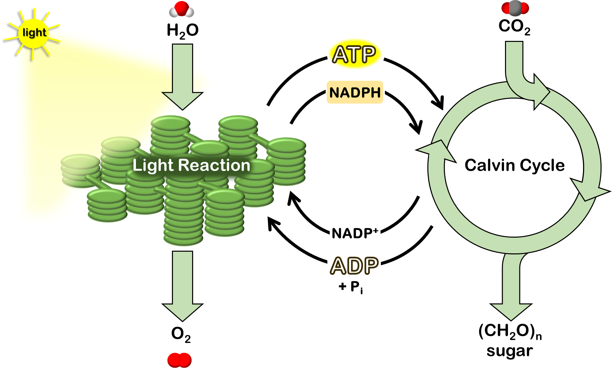
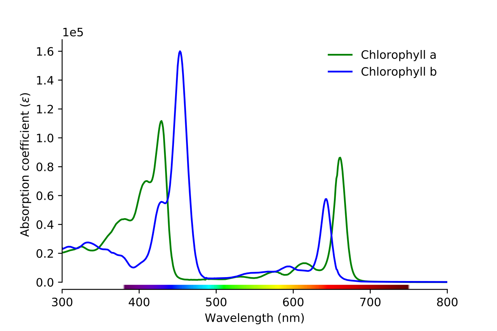
2. Photosystem I and II — reaction centres and antennae
Think of the antenna as a funnel and the reaction centre as the drain. Hundreds of antenna molecules — chlorophyll a, chlorophyll b and carotenoids bound to light-harvesting complex (LHC) proteins — absorb photons and pass excitation energy from one pigment to the next by resonance energy transfer. The energy arrives at a single special pair of chlorophyll a molecules in the reaction centre. Only there does a chemical event happen: the excited chlorophyll a donates an electron to an acceptor. That is the moment light energy becomes chemical energy.
P680 and P700: why the numbers matter
The numbers are absorption maxima, not arbitrary labels. P680 absorbs maximally at 680 nm; P700 at 700 nm. They are both chlorophyll a, but their protein environment shifts their absorption. The order of action is the reverse of the numbering, and that confuses students: PSII acts first in the non-cyclic (Z-scheme) flow, even though it is called II, because it was discovered second. PSII splits water and feeds electrons onwards; PSI then re-energises them to reduce NADP+.
| Feature | Photosystem II (PSII) | Photosystem I (PSI) |
|---|---|---|
| Reaction centre | P680 (chlorophyll a pair) | P700 (chlorophyll a pair) |
| Location | Mainly grana (stacked thylakoids) | Mainly stroma lamellae (unstacked thylakoids) |
| First job | Photolysis of water; releases O2, H+ and electrons | Re-energises electrons; reduces NADP+ to NADPH via ferredoxin |
| Primary electron acceptor | Pheophytin, then plastoquinone | Ferredoxin (via iron–sulphur proteins) |
| Products | O2 and electrons for the chain; contributes to the proton gradient | NADPH (and ATP via the proton gradient in non-cyclic flow) |
Antenna vs reaction centre — the distinction to write in an exam: antenna molecules only transfer excitation energy; they never lose an electron themselves. The reaction centre is the only place where charge separation occurs — an electron is actually removed from chlorophyll a, leaving P680+ (a very strong oxidant, able to pull electrons from water) or P700+. If a question asks "where does photolysis happen?", the answer is at PSII, because only P680+ is oxidising enough to split water.
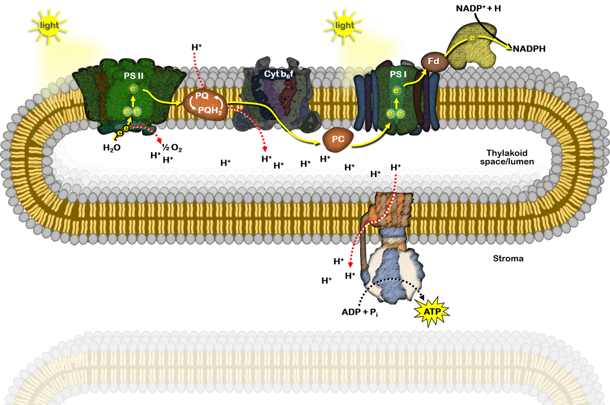
3. Electron transport and ATP synthesis
Photolysis of water
Water is split at the oxygen-evolving complex on the lumen side of PSII: 2H2O → O2 + 4H+ + 4e−. The electrons replace those lost by P680; the protons add to the lumen proton gradient; the oxygen is released as a by-product. This is the only source of the oxygen we breathe from photosynthesis, and it explains why oxygen evolution and PSII activity rise and fall together.
The Z-scheme: non-cyclic electron flow
The Z-scheme is named for the zig-zag shape of the energy diagram: electrons are boosted up twice (once at each photosystem) and fall downhill between them. Follow one electron:
Products of non-cyclic flow: ATP (from the proton gradient), NADPH, and O2. Both ATP and NADPH are needed by the Calvin cycle, so non-cyclic flow is the main route in ordinary photosynthesis.
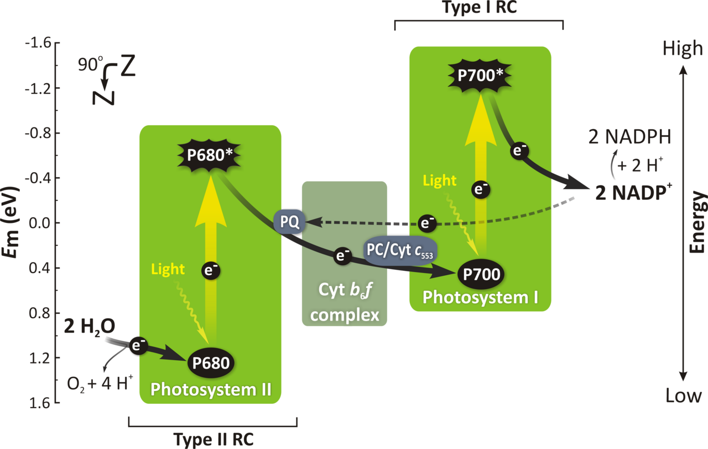
Cyclic electron flow
In cyclic flow, electrons from PSI return via ferredoxin to the cytochrome b6f complex and plastoquinone, then back to PSI, instead of going to NADP+. No water is split, no oxygen is released, and no NADPH is made — but protons are still pumped, so ATP is still made. Cyclic flow therefore lets the chloroplast top up ATP when the Calvin cycle needs more ATP than NADPH (the Calvin cycle needs 3 ATP per NADPH, while non-cyclic flow gives a ratio closer to 1:1), and it operates when NADP+ is scarce.
| Feature | Non-cyclic photophosphorylation | Cyclic photophosphorylation |
|---|---|---|
| Photosystems involved | PSII and PSI | PSI only |
| Water split / O2 released | Yes | No |
| Products | ATP and NADPH | ATP only |
| Electron path | Water → PSII → PQ → Cyt b6f → PC → PSI → Fd → NADP+ | PSI → Fd → Cyt b6f → PQ → PC → PSI (cycle) |
| When it dominates | Normal photosynthesis | When extra ATP is needed, or NADP+ is limiting |
Chemiosmosis and ATP synthesis: Mitchell, Jagendorf and Arnon
Photophosphorylation was demonstrated by Arnon and colleagues in 1954, who showed isolated chloroplasts could make ATP in light. The mechanism is chemiosmosis, proposed by Mitchell: the electron transport chain does not make ATP directly; it builds a proton gradient, and the gradient drives ATP synthesis.
Protons accumulate in the thylakoid lumen from three sources: photolysis of water, protons carried across by plastoquinone, and proton pumping by cytochrome b6f. The result is a steep gradient: the stroma is about pH 8 (alkaline) while the lumen is about pH 5.5 (acidic). The decisive proof came from Jagendorf's acid-bath experiment: chloroplasts soaked in acid (so their lumen became acidic) and then transferred to an alkaline buffer made ATP in the dark, with no light at all — proving that the proton gradient alone, not light itself, drives ATP synthesis.
ATP synthase (the CFo–CF1 complex) sits in the thylakoid membrane. CFo is the membrane-embedded proton channel; protons flowing down their gradient through CFo rotate the complex. CF1 is the stromal head that uses that rotation to join ADP + inorganic phosphate (Pi) into ATP. The same principle, with a mitochondrial Fo–F1 ATP synthase, drives oxidative phosphorylation in respiration (Section 9) — learn chemiosmosis once and use it twice.
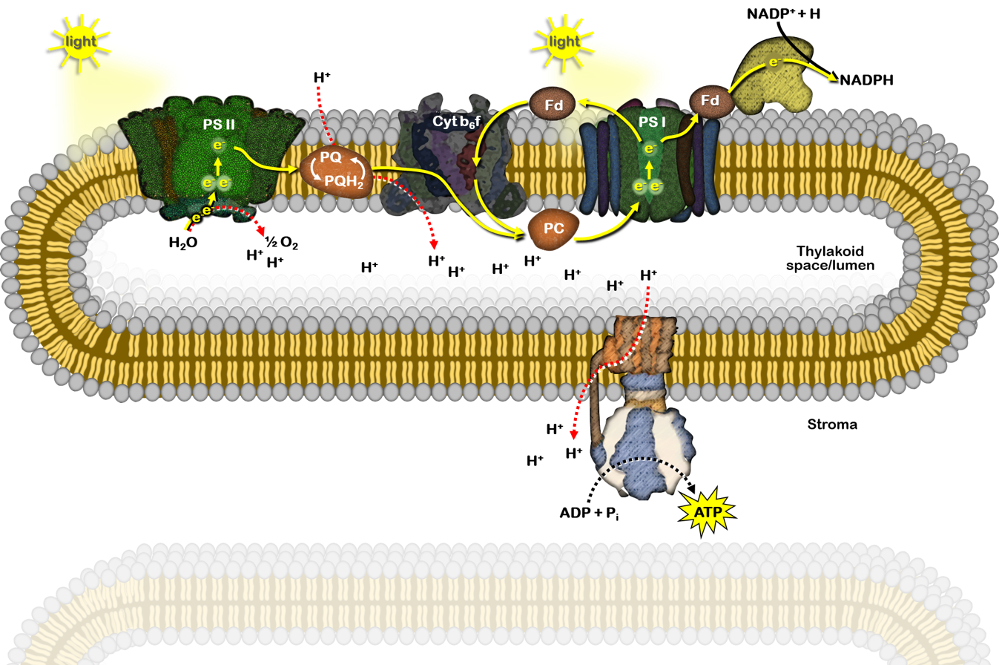
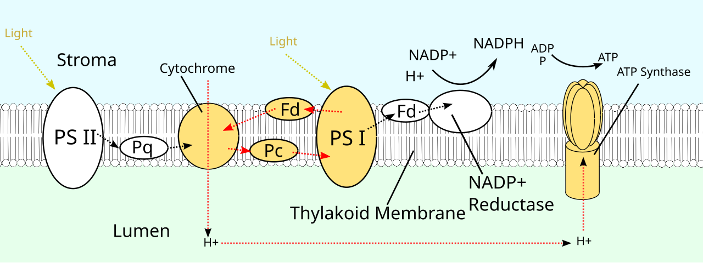
4. C3, C4 and CAM pathways of carbon fixation
The Calvin cycle (C3 pathway)
The Calvin cycle runs in the stroma and uses the ATP and NADPH from the light reactions. It has three phases. The overall requirement is 3 ATP and 2 NADPH per CO2 fixed (18 ATP and 12 NADPH per glucose, since 6 CO2 are needed).
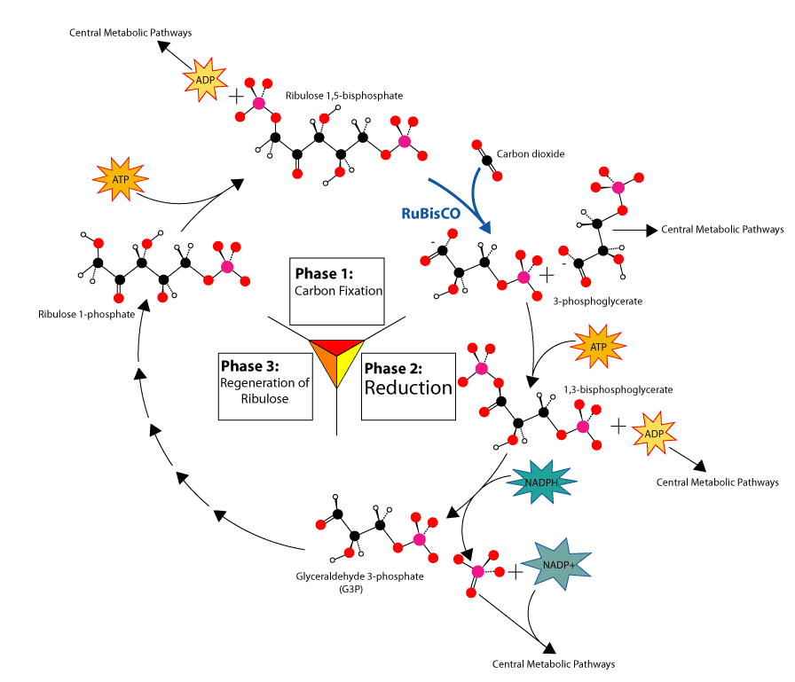
The C4 pathway (Hatch–Slack pathway)
C4 plants — maize, sugarcane, sorghum — solve a problem of the C3 pathway: RuBisCO also binds oxygen (see photorespiration, Section 5), wasting fixed carbon in hot, bright conditions when stomata close and internal O2 rises relative to CO2. The C4 solution is spatial separation, supported by Kranz anatomy ("wreath" anatomy): mesophyll cells form a ring around large, chloroplast-rich bundle-sheath cells that surround the vascular bundle.
In mesophyll cells, CO2 is first fixed not by RuBisCO but by PEP carboxylase, which has a much higher affinity for CO2 (as bicarbonate) and no oxygenase activity. CO2 + phosphoenolpyruvate (PEP, 3C) → oxaloacetate (OAA, 4C), which is converted to malate (4C). The 4C acid is the first stable product — hence "C4". Malate moves into the bundle-sheath cells, where it is decarboxylated, releasing CO2 at a high concentration around RuBisCO. RuBisCO then runs the Calvin cycle there, with almost no oxygenase activity because CO2 now vastly outnumbers O2. The remaining 3C compound (pyruvate) returns to the mesophyll, where ATP regenerates PEP. This CO2-concentrating pump costs extra ATP (2 extra ATP per CO2), so C4 plants pay more energy per CO2 — but in hot, high-light environments they more than recover the cost by avoiding photorespiration.
CAM pathway (Crassulacean acid metabolism)
CAM plants — cacti, agaves, pineapples, many succulents — live where water is scarcer still. Opening stomata by day would lose too much water, so they separate the same two carboxylations by time, not by cell type, in the same mesophyll cell.
At night, stomata open when it is cool and humid. PEP carboxylase fixes CO2 into oxaloacetate, then malate, which is stored overnight in the large central vacuole as malic acid. By day, stomata close to conserve water. Malate leaves the vacuole and is decarboxylated, releasing CO2 inside the leaf; RuBisCO then runs the Calvin cycle using that internally released CO2, powered by the day's light reactions. CAM is therefore slow — growth is limited by how much malate can be stored overnight — but extremely water-efficient.
Comparison: C3 vs C4 vs CAM
| Feature | C3 | C4 | CAM |
|---|---|---|---|
| First stable product | 3-PGA (3C) | Oxaloacetate / malate (4C) | Malate / malic acid (4C) |
| First carboxylating enzyme | RuBisCO | PEP carboxylase (mesophyll), then RuBisCO (bundle sheath) | PEP carboxylase (night), then RuBisCO (day) |
| Separation | None | Spatial: two cell types (Kranz anatomy) | Temporal: night vs day, same cell |
| Photorespiration | High in hot, bright conditions | Negligible | Low |
| Water-use efficiency | Lowest | High | Highest |
| Energy cost per CO2 | Lowest (3 ATP, 2 NADPH) | Higher (+2 ATP for PEP regeneration) | Higher, and growth slower |
| Examples | Rice, wheat, most temperate plants | Maize, sugarcane, sorghum | Cactus, agave, pineapple |
| Best environment | Cool, moist, moderate light | Hot, bright, tropical / subtropical | Arid, desert |
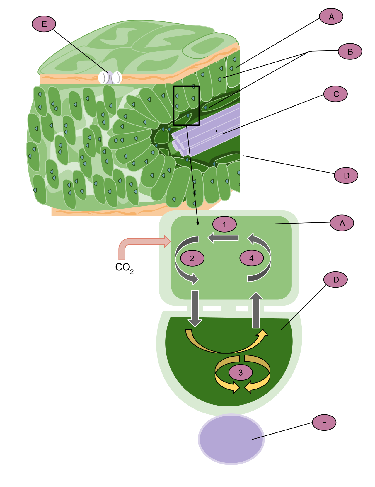
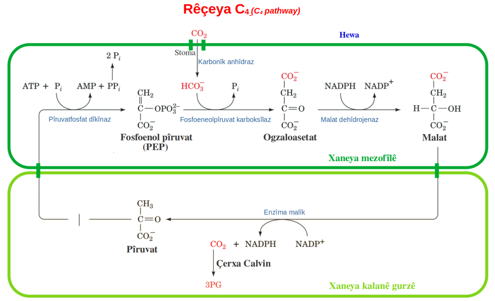
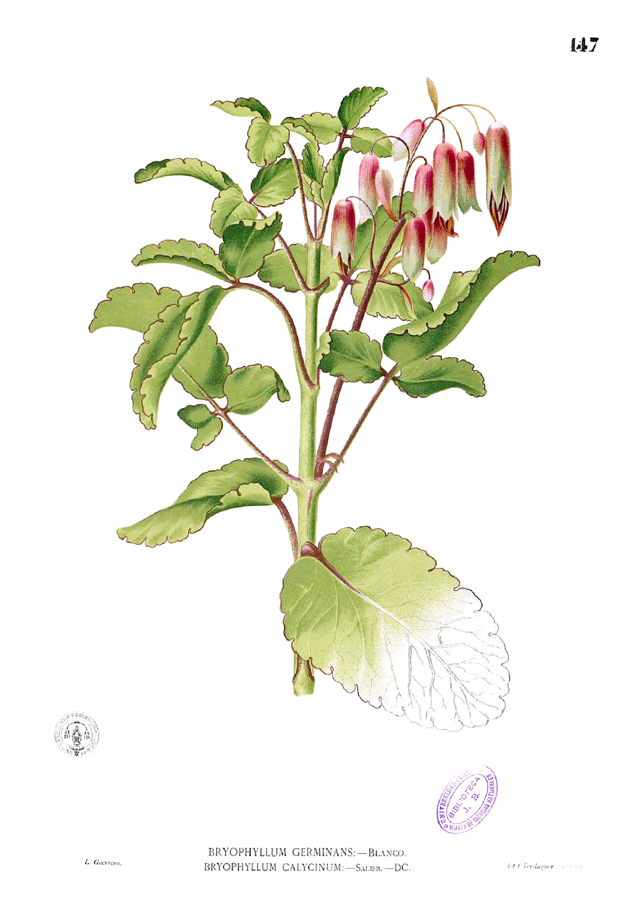
5. Photorespiration
RuBisCO is an ancient, imperfect enzyme: it cannot fully distinguish CO2 from O2. When O2 binds instead of CO2, RuBP (5C) is split into one molecule of 3-PGA (3C), which re-enters the Calvin cycle, and one molecule of phosphoglycolate (2C), which cannot. The plant must salvage that 2C fragment, and the salvage pathway is photorespiration.
Salvage requires cooperation across three organelles. In the chloroplast, phosphoglycolate is dephosphorylated to glycolate and exported. In the peroxisome, glycolate is oxidised to glyoxylate and then transaminated to glycine. In the mitochondrion, two glycines combine to form one serine (3C) plus CO2 and ammonia (NH3) — this is where the CO2 is actually released. Serine returns via the peroxisome to the chloroplast, where it is converted back to 3-PGA and re-enters the Calvin cycle. Net result for two oxygenations: one 3-PGA recovered, one CO2 lost, plus ATP and NADPH consumed and toxic ammonia to detoxify. In C3 plants under hot, bright, dry conditions, photorespiration can reduce net photosynthesis by 25–50%.
Why C4 plants avoid it: the C4 pump (Section 4) concentrates CO2 around RuBisCO in bundle-sheath cells, so CO2 outcompetes O2 at the active site and oxygenase activity is negligible. CAM plants achieve a similar effect by releasing stored CO2 internally during the day. Photorespiration is therefore mainly a C3 problem, and it gets worse exactly when stomata close: internal CO2 falls, O2 from the light reactions accumulates, and the O2/CO2 ratio at RuBisCO rises.
Is photorespiration entirely wasteful? Exam answers should call it wasteful in net carbon and energy terms, but note that it also protects the photosynthetic apparatus by dissipating excess energy when CO2 is limiting, and it recovers most (about three-quarters) of the carbon in phosphoglycolate rather than losing it all. Do not write that it "produces energy" — it consumes it.
6. Glycolysis
Glycolysis is universal: it occurs in the cytoplasm of almost every living cell, plant or animal, aerobic or anaerobic. That universality is the point — it is the ancient, oxygen-independent first stage of respiration, and everything after it (TCA cycle, oxidative phosphorylation) depends on whether oxygen is available and on the pyruvate it produces.
The 10 steps in outline
Memorise the logic, not every enzyme name at first: an energy-investment phase (steps 1–5) spends ATP to split glucose, then an energy-payoff phase (steps 6–10) earns ATP back, twice over because the molecule has split in two.
The net vs gross trap: glycolysis makes 4 ATP in total (gross), but 2 ATP were spent to start it, so the net gain is 2 ATP. If a question asks "net gain", the answer is 2; if it asks "total ATP formed", the answer is 4. Writing 4 for a net-gain question loses the mark — see the Exam traps box.
What happens to pyruvate next depends on oxygen: with oxygen, pyruvate enters the mitochondrion, is oxidatively decarboxylated to acetyl-CoA, and enters the TCA cycle (Section 8). Without oxygen, pyruvate is fermented (Section 7) so that NAD+ can be regenerated and glycolysis can continue.
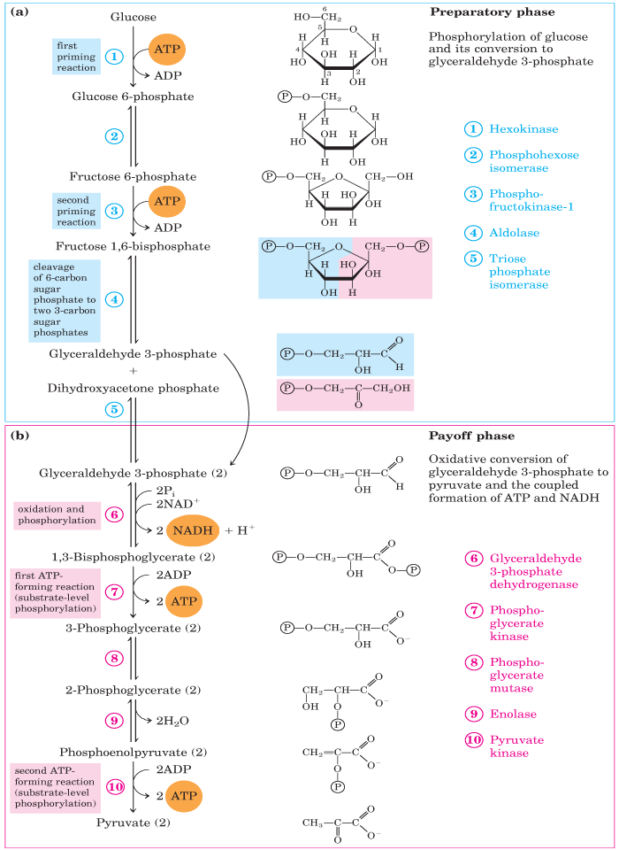
7. Anaerobic respiration and fermentation
The purpose of fermentation is easily misunderstood: it is not to make more ATP, but to recycle NAD+. Glycolysis needs NAD+ at step 6; without oxygen, the electron transport chain cannot re-oxidise NADH, so NAD+ would run out and glycolysis would stop. Fermentation solves this by dumping the electrons from NADH onto pyruvate or its derivative.
Alcoholic fermentation
In yeast and some plant tissues (for example, waterlogged roots), pyruvate is decarboxylated to acetaldehyde (releasing CO2), then reduced by NADH to ethanol. This is the basis of brewing and bread-making: ethanol in beer and wine, CO2 raising bread dough.
Lactic acid fermentation
In muscle cells under intense exercise and in lactic acid bacteria, pyruvate is reduced directly by NADH to lactate (lactic acid). No CO2 is released. In plants, lactic fermentation can occur transiently in flooded roots, but prolonged lactate accumulation acidifies the cytoplasm, which is why plants generally favour alcoholic fermentation under anoxia.
| Feature | Aerobic respiration | Anaerobic respiration (fermentation) |
|---|---|---|
| Oxygen required | Yes | No |
| Site | Cytoplasm (glycolysis) + mitochondria (TCA, ETC) | Cytoplasm only |
| Glucose breakdown | Complete: to CO2 + H2O | Incomplete: to ethanol + CO2, or lactate |
| ATP per glucose | About 30–32 (modern values; see Section 9) | Net 2 only |
| NAD+ regenerated by | Electron transport chain (O2 as final acceptor) | Reduction of pyruvate / acetaldehyde |
8. The TCA (Krebs) cycle
Entry: pyruvate to acetyl-CoA
Before the cycle starts, each pyruvate (3C) is transported into the mitochondrial matrix and oxidatively decarboxylated by the pyruvate dehydrogenase complex to acetyl-CoA (2C), releasing one CO2 and one NADH per pyruvate. This link reaction is not part of the TCA cycle itself, but exam totals must include it — it contributes 2 CO2 and 2 NADH per glucose.
The cycle, step by step
Per acetyl-CoA (one turn): 2 CO2, 3 NADH, 1 FADH2, 1 GTP. Per glucose (two turns, plus the link reaction and glycolysis): 6 CO2 from the cycle and link reaction in total (2 from the link reaction + 4 from two turns), 10 NADH in total (2 glycolysis + 2 link + 6 TCA), 2 FADH2, and 4 ATP equivalents by substrate-level phosphorylation (2 net from glycolysis + 2 GTP from the cycle). The NADH and FADH2 carry most of the energy onwards to oxidative phosphorylation — the TCA cycle itself makes very little ATP directly, and that is a common exam error to avoid.
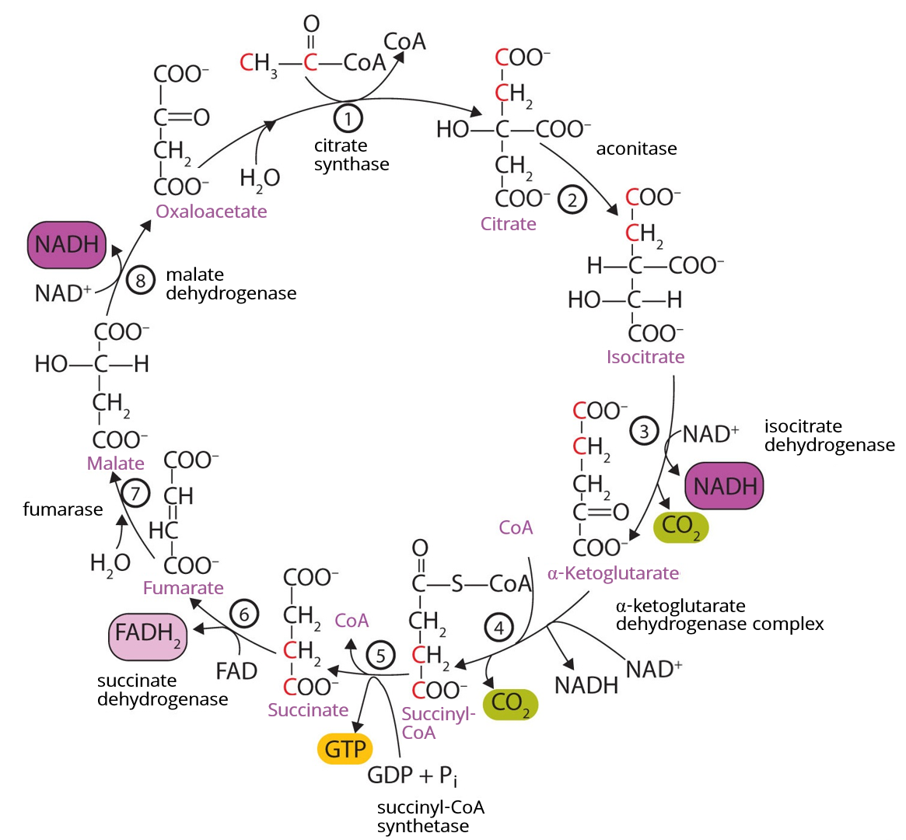
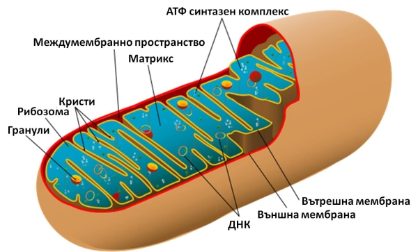
9. Oxidative phosphorylation
The electron transport chain: complexes I–IV
Chemiosmosis and ATP synthase
As in the chloroplast (Section 3), the gradient is the point. Complexes I, III and IV pump protons from the matrix into the intermembrane space, making the intermembrane space acidic and positively charged relative to the matrix. Protons flow back into the matrix through the Fo channel of ATP synthase; the rotation drives the F1 head to synthesise ATP from ADP + Pi. Roughly 4 protons are needed per ATP made (including the cost of importing ADP and Pi and exporting ATP).
ATP yield: the convention used on this page
Convention used throughout this page: 1 NADH = 2.5 ATP and 1 FADH2 = 1.5 ATP (modern P/O ratios). Older textbooks used 3 and 2, giving 36–38 ATP per glucose; modern values give about 30–32 ATP per glucose. The range comes from the shuttle used to move cytoplasmic NADH from glycolysis into the mitochondrion: the malate–aspartate shuttle delivers its electrons as mitochondrial NADH (giving 32 ATP in total), while the glycerol-phosphate shuttle delivers them as FADH2 (giving 30 ATP in total). State your convention in an exam if the question does not — a marker cannot fault a stated, consistent convention, but an unstated switch between 3 and 2.5 will look like an error.
Worked total (malate–aspartate shuttle, 2.5 / 1.5 convention): glycolysis net 2 ATP + 2 NADH (5 ATP) + link reaction 2 NADH (5 ATP) + TCA 6 NADH (15 ATP) + 2 FADH2 (3 ATP) + 2 GTP (2 ATP) = 32 ATP. With the glycerol-phosphate shuttle, the 2 cytoplasmic NADH give only 3 ATP, for a total of 30 ATP.
Poisons and uncouplers (brief)
Cyanide blocks complex IV (cytochrome c oxidase), so electrons cannot reach oxygen and ATP synthesis stops even though oxygen is present — the cell effectively suffocates. Uncouplers (for example, 2,4-dinitrophenol, DNP) make the inner membrane leaky to protons, so the gradient dissipates as heat without passing through ATP synthase: electron transport continues (and oxygen consumption may even rise), but ATP production falls. Brown fat uses a natural uncoupling protein (thermogenin) for the same purpose — heat production.
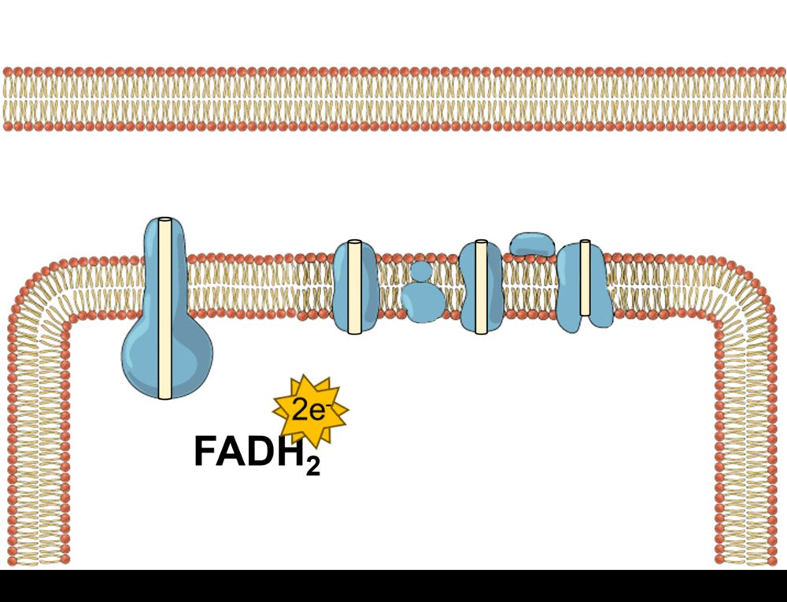
10. The glyoxylate cycle
Animals cannot convert fat into glucose net, because the two decarboxylation steps of the TCA cycle lose the acetyl-CoA carbons as CO2. Germinating oil seeds can, and the glyoxylate cycle is how. In seeds such as castor bean, stored fats are broken down by beta-oxidation to acetyl-CoA. If that acetyl-CoA entered the ordinary TCA cycle, its carbons would be lost as CO2 and no sugar could be built. Instead, in the glyoxysome, the cycle bypasses those steps.
The two signature enzymes are isocitrate lyase and malate synthase; if a question asks what makes the glyoxylate cycle distinct, name those two. The cycle fades once the seedling becomes photosynthetic and no longer needs to live off its fat reserves.
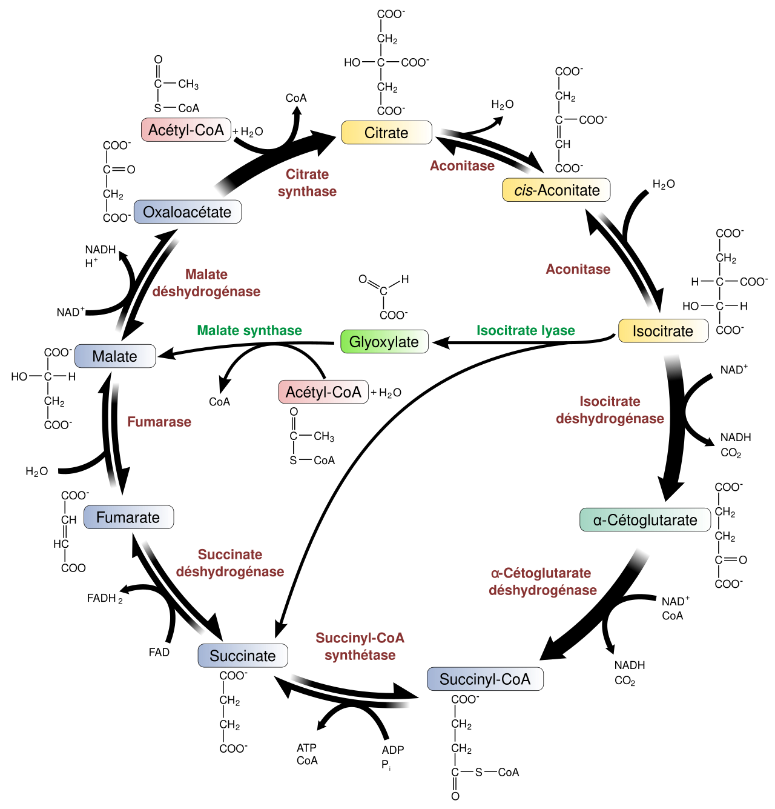
11. Oxidative pentose phosphate pathway (OPPP)
Respiration is usually taught as an ATP story, but cells also need reducing power for building molecules and 5-carbon sugars for DNA and RNA. The OPPP supplies both, without making ATP. Its oxidative phase converts glucose-6-phosphate → 6-phosphogluconate → ribulose-5-phosphate, releasing CO2 and producing 2 NADPH per glucose-6-phosphate. The non-oxidative phase then rearranges pentose phosphates back into glycolytic intermediates (fructose-6-phosphate and glyceraldehyde-3-phosphate), so carbon is not wasted.
Products and their uses: NADPH is used for fatty-acid synthesis, nitrogen assimilation (nitrate reduction), and maintaining reduced glutathione for antioxidant defence — note the contrast with NADH, which mainly feeds the electron transport chain for ATP. Ribose-5-phosphate is the backbone sugar for nucleotides (ATP, NAD+, DNA, RNA) and, in plants, feeds into the shikimate pathway for aromatic compounds. Where it runs: in plant cells the OPPP operates in the cytosol and in plastids (including chloroplasts in the dark, when the Calvin cycle is off and the chloroplast still needs NADPH); the plastid form is especially important in non-photosynthetic tissues such as roots. The key regulatory enzyme is glucose-6-phosphate dehydrogenase, which is inhibited by NADPH — a simple feedback loop: when NADPH is plentiful, the pathway slows.
Exam traps
- Net 2 ATP vs gross 4 ATP (glycolysis): Glycolysis forms 4 ATP but spends 2 ATP in the investment phase. Net gain = 2 ATP. Read the question: "net" means 2, "total formed" means 4.
- Chl a, not Chl b, as primary donor: Only chlorophyll a occupies the reaction centre (P680 in PSII, P700 in PSI). Chlorophyll b and carotenoids are accessory pigments only.
- Photorespiration is not respiration: It consumes ATP and NADPH, releases CO2, and produces no ATP. Do not list it as an energy-yielding pathway, and do not confuse it with mitochondrial respiration or the glyoxylate cycle.
- NADH yields vary with shuttle — convention used here: This page uses the modern convention NADH = 2.5 ATP and FADH2 = 1.5 ATP, giving 30–32 ATP per glucose depending on the shuttle (malate–aspartate = 32; glycerol-phosphate = 30). Older 3 / 2 values give 36–38. State your convention in the exam.
- PSII acts first, PSI second: The numbering reflects discovery order, not action order. Water is split at PSII.
- The TCA cycle makes little ATP directly: Most energy leaves as NADH and FADH2 for oxidative phosphorylation; only 1 GTP per turn is made directly.
- Oxygen is used only at complex IV: Oxygen does not participate in glycolysis or the TCA cycle directly; it is the final electron acceptor of the ETC.
Short notes — exam-ready 5-mark answers
Each note below is written to be reproduced in about 5 marks: definition first, key points in order, and one example or number where it earns a mark.
Short note 1: Photosynthetic pigments
Photosynthetic pigments absorb light and funnel excitation energy to a reaction centre. Chlorophyll a is the primary pigment: it absorbs blue (~430 nm) and red (~660–680 nm) light and is the only pigment that acts as the reaction-centre electron donor (P680, P700). Chlorophyll b (blue ~453 nm, red ~642 nm) differs by a formyl group and acts only as an accessory pigment, widening absorption. Carotenoids — carotenes (hydrocarbons, e.g. beta-carotene) and xanthophylls (oxygenated, e.g. lutein, zeaxanthin) — absorb blue-green light (400–500 nm), transfer energy to chlorophyll a, and protect against photo-oxidation, with the xanthophyll cycle dissipating excess energy as heat. Conclusion: chlorophyll a does the chemistry; accessory pigments widen the harvest and protect it.
Short note 2: C3 vs C4 vs CAM pathways
C3 plants fix CO2 directly via RuBisCO into 3-PGA (3C) in the Calvin cycle; this is efficient in cool, moist conditions but suffers photorespiration when hot and dry. C4 plants (maize, sugarcane) first fix CO2 via PEP carboxylase in mesophyll cells into oxaloacetate/malate (4C), then release CO2 in bundle-sheath cells (Kranz anatomy) for the Calvin cycle, nearly eliminating photorespiration at the cost of extra ATP. CAM plants (cactus, agave) fix CO2 at night via PEP carboxylase, store malate in the vacuole, and release CO2 to the Calvin cycle by day behind closed stomata, achieving the highest water-use efficiency but slow growth. In short: C4 separates fixation spatially, CAM separates it temporally, and C3 does neither.
Short note 3: Photorespiration
Photorespiration occurs when RuBisCO binds O2 instead of CO2, producing phosphoglycolate (2C) alongside 3-PGA. Salvage of phosphoglycolate requires three organelles: chloroplast (glycolate formation), peroxisome (glycolate to glycine), and mitochondrion (two glycines to serine + CO2 + NH3). The pathway loses fixed carbon as CO2, consumes ATP and NADPH, and produces no ATP, so it reduces net photosynthesis by 25–50% in C3 plants under hot, bright, dry conditions. C4 plants avoid it by concentrating CO2 around RuBisCO in bundle-sheath cells. It is not respiration: it is a wasteful salvage pathway, though it also dissipates excess energy when CO2 is limiting.
Short note 4: Glycolysis
Glycolysis is the cytoplasmic breakdown of glucose (6C) to two pyruvate (3C) molecules in 10 steps, without oxygen. The investment phase (steps 1–5) spends 2 ATP to phosphorylate glucose and split it into two 3C sugars. The payoff phase (steps 6–10) oxidises each 3C sugar, producing NADH and 2 ATP per 3C sugar by substrate-level phosphorylation, giving a gross 4 ATP. Net gain per glucose: 2 ATP, 2 NADH and 2 pyruvate. Pyruvate then enters the mitochondrion for the TCA cycle if oxygen is present, or is fermented if it is not, to regenerate NAD+. The key regulatory enzyme is phosphofructokinase.
Short note 5: Glyoxylate cycle
The glyoxylate cycle is a modified TCA cycle in glyoxysomes that lets germinating oil seeds convert fat to sugar. Fats are broken down to acetyl-CoA, which joins oxaloacetate to form citrate and then isocitrate. Instead of the two CO2-releasing steps of the TCA cycle, isocitrate lyase splits isocitrate into succinate and glyoxylate, and malate synthase joins glyoxylate to a second acetyl-CoA to form malate. Succinate and malate are converted to oxaloacetate and then, via gluconeogenesis, to glucose and sucrose for the seedling before it can photosynthesise. Its signature enzymes are isocitrate lyase and malate synthase, and it declines once the seedling is photosynthetic.
Short note 6: Oxidative pentose phosphate pathway (OPPP)
The OPPP oxidises glucose-6-phosphate outside the ATP-yielding route of respiration to supply NADPH and pentose sugars. In the oxidative phase, glucose-6-phosphate is converted to ribulose-5-phosphate with release of CO2 and production of 2 NADPH; the non-oxidative phase rearranges pentose phosphates back to fructose-6-phosphate and glyceraldehyde-3-phosphate. NADPH is used for fatty-acid synthesis, nitrogen assimilation and antioxidant defence, while ribose-5-phosphate is needed for nucleotide synthesis (DNA, RNA, ATP, NAD+). In plants it runs in the cytosol and in plastids, including chloroplasts in the dark. Its key enzyme, glucose-6-phosphate dehydrogenase, is feedback-inhibited by NADPH.
Long answers — 10-mark model answers
Long answer 1: Describe the Z-scheme of non-cyclic electron flow and explain how ATP and NADPH are formed. (10 marks)
Structure: (1) Photolysis and PSII, (2) carrier chain PSII to PSI, (3) PSI to NADPH, (4) proton gradient and ATP synthesis, (5) contrast with cyclic flow and summary of products.
Answer outline: Light excites P680 in PSII; the electron passes via pheophytin to plastoquinone, the cytochrome b6f complex (which pumps protons) and plastocyanin to PSI. Light re-excites it at P700; it passes via ferredoxin to NADP+ reductase, reducing NADP+ to NADPH. Electrons lost by P680 are replaced by photolysis of water (2H2O → O2 + 4H+ + 4e−). Protons accumulate in the lumen (from photolysis, plastoquinone and cytochrome b6f) giving stroma pH ~8 versus lumen pH ~5.5; protons flow back through the CFo–CF1 ATP synthase to make ATP (photophosphorylation, Arnon 1954; chemiosmosis, Mitchell; Jagendorf's acid-bath experiment as proof). Cyclic flow (PSI only) makes ATP alone and tops up the ATP:NADPH ratio. Products of non-cyclic flow: ATP, NADPH and O2.
Marking points: P680/P700 identification; correct carrier order (PQ, Cyt b6f, PC, Fd); photolysis equation; proton gradient values; CFo/CF1 roles; Jagendorf evidence; cyclic vs non-cyclic distinction. Diagram cue: Draw the Z-scheme zig-zag with two light boosts, labelled carriers, and the thylakoid proton gradient beside it.
Long answer 2: Describe oxidative phosphorylation and explain the role of chemiosmosis in ATP synthesis. (10 marks)
Structure: (1) Sources of NADH/FADH2, (2) complexes I–IV and mobile carriers, (3) proton gradient, (4) ATP synthase and chemiosmosis, (5) ATP yield with stated convention, (6) inhibitors/uncouplers.
Answer outline: NADH enters at complex I and FADH2 at complex II (succinate dehydrogenase, which pumps no protons); both feed ubiquinone (Q), then complex III, cytochrome c, and complex IV, where oxygen is reduced to water. Complexes I, III and IV pump protons into the intermembrane space. Protons return through the Fo channel of ATP synthase; rotation drives the F1 head to make ATP from ADP + Pi — chemiosmosis, the same principle as photophosphorylation. Using NADH = 2.5 and FADH2 = 1.5 ATP, aerobic respiration yields about 30–32 ATP per glucose (32 with the malate–aspartate shuttle, 30 with the glycerol-phosphate shuttle); older 3/2 values give 36–38. Cyanide blocks complex IV and halts ATP synthesis; uncouplers (e.g. DNP) dissipate the gradient as heat without ATP formation.
Marking points: Complex order and proton-pumping complexes; Q and cytochrome c as mobile carriers; oxygen as final acceptor only at complex IV; Fo/F1 roles; stated ATP convention with shuttle explanation; cyanide and uncoupler mechanisms. Diagram cue: Draw the inner membrane with complexes I–IV, proton arrows into the intermembrane space, and ATP synthase with protons flowing back.
Long answer 3: Compare the Calvin cycle with the C4 and CAM pathways, and explain why C4 and CAM plants perform better in hot, dry environments. (10 marks)
Structure: (1) Calvin cycle phases, (2) the photorespiration problem, (3) C4 mechanism and Kranz anatomy, (4) CAM mechanism and day/night separation, (5) comparison table and environmental conclusion.
Answer outline: The Calvin cycle (stroma) has carboxylation (RuBisCO: RuBP + CO2 → 2 × 3-PGA), reduction (ATP + NADPH → G3P) and regeneration of RuBP, requiring 3 ATP and 2 NADPH per CO2. Its weakness is RuBisCO's oxygenase activity, which drives photorespiration when stomata close in heat and the O2/CO2 ratio rises. C4 plants (maize, sugarcane) fix CO2 first via PEP carboxylase in mesophyll cells to a 4C acid, transport malate to bundle-sheath cells (Kranz anatomy), and release CO2 there at high concentration for RuBisCO, nearly abolishing photorespiration at an extra ATP cost. CAM plants (cactus, agave) do the same separation in time: night fixation by PEP carboxylase and vacuolar malate storage, daytime CO2 release behind closed stomata. Both therefore keep photosynthesis going with less water loss and less photorespiration than C3 plants in hot, dry, high-light habitats, at the cost of extra ATP and (for CAM) slower growth.
Marking points: Three Calvin phases with ATP/NADPH cost; RuBisCO oxygenase and photorespiration; PEP carboxylase properties (high CO2 affinity, no oxygenase activity); Kranz anatomy; CAM night/day steps and vacuole role; comparison of water-use efficiency and energy cost. Diagram cue: Draw a C4 leaf cross-section (mesophyll ring around bundle sheath) and a CAM night/day pair, or a comparison table if time is short.
Study checklist
Tick each item as you master it. Your ticks are saved in this browser for this unit.